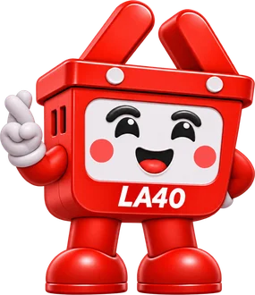
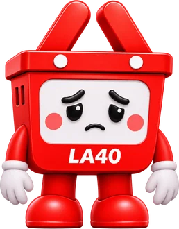
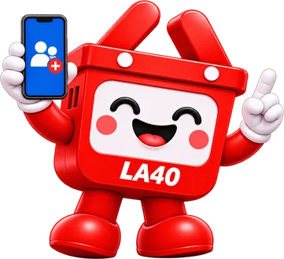
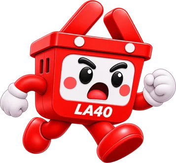
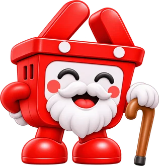

Mega Market La 40 › Opsi › Poses
Poses de Opsi, la mascota de Mega Market La 40
Opsi tiene una pose para cada momento. Elige una categoría, mira sus poses y descarga las pegatinas gratis.

Elige una categoría
39 poses de Opsi en 6 categorías.
- Saludos y cariño9 posesOpsi saluda, guiña, aprueba, hace una reverencia, lanza un beso, da un abrazo o hace un corazón.

Gestos y señas8 posesOpsi con las manos: perfecto, victoria, promesa, pausa, suerte, escuchar o pedir la palabra.
Emociones9 posesOpsi sonriente, sorprendida, triste, enfadada, con sueño o dormida.
Anuncios y avisos5 posesOpsi con megáfono, teléfono, lupa o pensando: para avisar e invitar.
Movimiento y animación7 posesOpsi corre, se desliza, salta y hace volteretas: poses pensadas para videos animados.
Disfraces y personajes1 poseOpsi caracterizada: por ejemplo de viejito con barba y bastón.
Úsalas libremente
Opsi es de todos: puedes usar sus pegatinas gratis en tus chats, publicaciones y trabajos. Solo menciona a Mega Market La 40. Por favor no las modifiques ni las uses para hacerte pasar por la tienda.